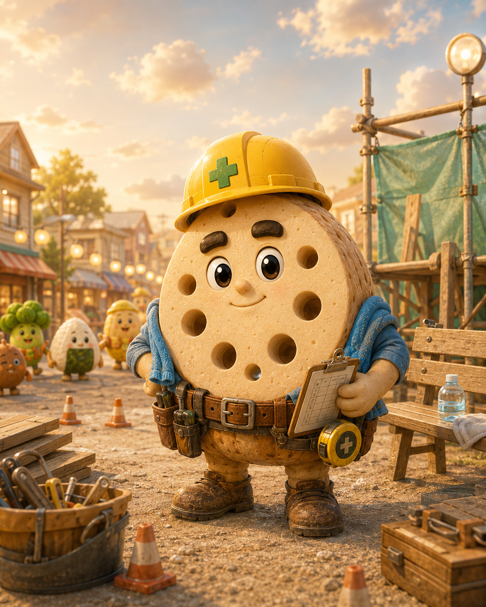

紹介文
レンコン親方は、Food Lifeの小さな工事現場を支える親方です。商店街のベンチ、ホテルの入口、空港ロビーの案内台まで、街のみんなが毎日使う場所を少しずつ直しています。
見た目はどっしり頼れますが、声はやさしく、失敗を責めることはありません。

Renkon Oyakata
穴だらけなのに、現場の安全だけは見落とさない。街の安心を静かに支える、やさしい工事現場の親方。
レンコン親方は、Food Lifeの小さな工事現場を支える親方です。商店街のベンチ、ホテルの入口、空港ロビーの案内台まで、街のみんなが毎日使う場所を少しずつ直しています。
見た目はどっしり頼れますが、声はやさしく、失敗を責めることはありません。
Food Lifeの住人たちは、黄色いヘルメットと青い首タオルを見ただけで「ここなら大丈夫」と感じます。レンコン親方は大きなことを言わず、誰かがつまずく前に段差を直し、困った食品キャラが作業しやすいように足場を低くします。
ブラックコーヒー社長とは幼馴染であり、今でも変わらない親友です。レンコン親方はブラックコーヒー社長を「コー」と呼び、ブラックコーヒー社長はレンコン親方を「レン」と呼びます。
二人は互いの仕事を深く尊重しています。ただし、特別扱いはしません。社長が現場に来ても、親方は普通に「そこ滑るぞ、コー」と声をかけます。
レンコン親方は、街の安全を静かに支える存在です。目立つヒーローではありませんが、毎日の安全確認で、Food Lifeの「小さな仕事にも意味がある」という価値観を体現しています。
レンコン親方、線が穴で点線になる
チョークラインがレンコン穴を通り、白い点線確認ラインになる工事現場コント。
夕方、レンコン親方は商店街のベンチを少しだけ直した。座ったミニポテトが「ふわっ」と笑うのを見て、親方はチェックボードに小さく丸をつけた。